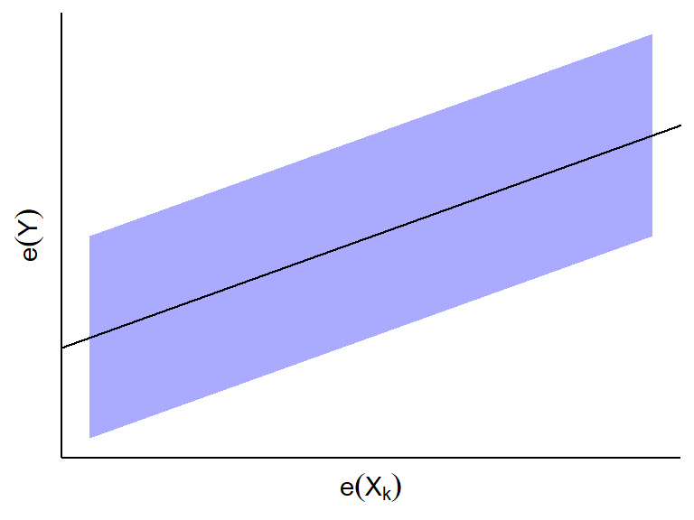
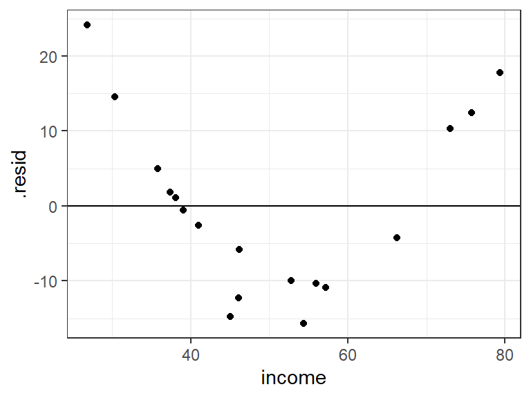
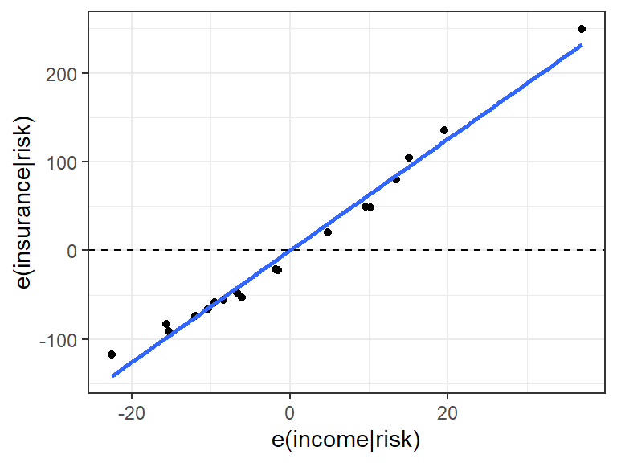
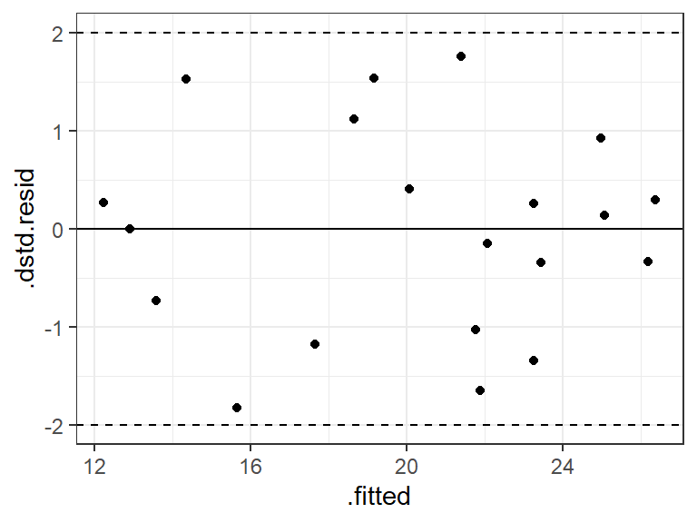
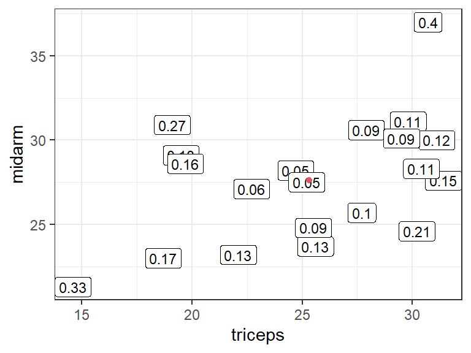
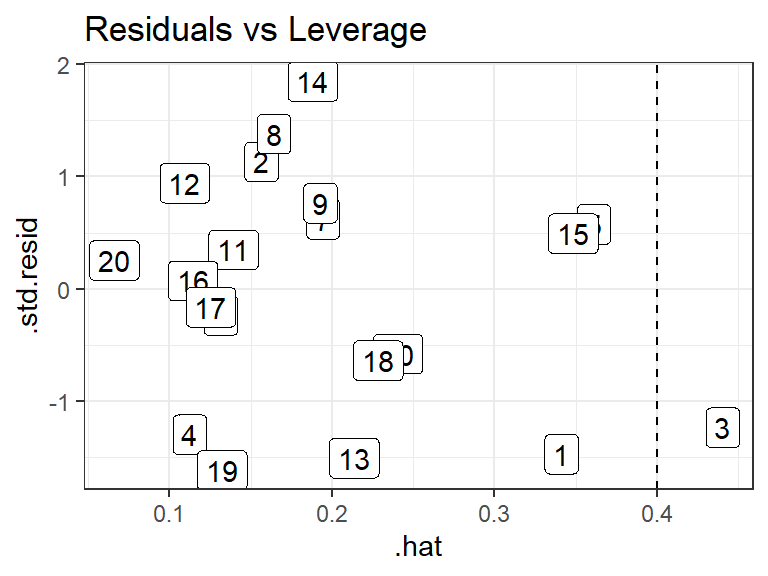
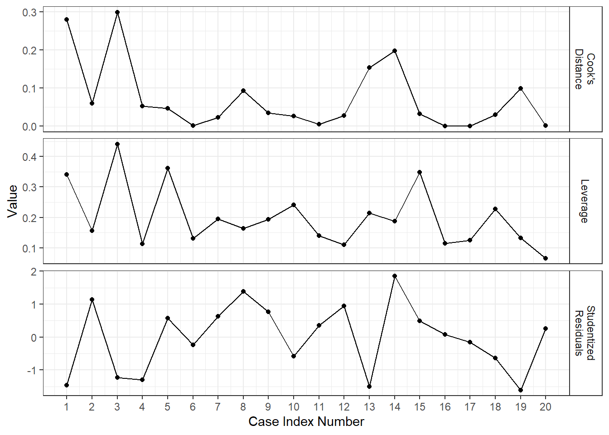

MLR: More Complicated Model Diagnostics
David Gerard
2021-11-15
Learning Objectives
- Studentized residuals, Leverage values, DFFits, Cook’s Distance, Variance Inflation Factor
- Chapter 10 of KNNL
Added Variable Plots
Goal: Visualization to determine model adequacy for a single predictor.
Motivation: Recall that we said to plot residuals versus predictors to see if there were curvature.
- This shows the relationship between the predictor and the residuals, but not after adjusting for other variables.
Added-variable plots (aka “partial regression plots” and “adjusted variables plots”)
- Regress \(Y\) (as the response) on every predictor except \(X_k\). Obtain the residuals, and call these \(e_i(Y)\)
- Regress \(X_k\) (as the response) on every other predictor. Obtain the residuals, and call these \(e_i(X_k)\)
- Make a scatterplot of \(e_i(X_k)\) versus \(e_i(Y)\).
Intuition:
- \(e_i(Y)\) and \(e_i(X_k)\) reflect the part of each variable that is not linearly associated with the other predictors.
Conclusions:
- If \(e_i(Y)\) and \(e_i(X_k)\) do not appear to be linearly related, then \(X_k\) is not associated with \(Y\) given all other predictors.
- If \(e_i(Y)\) and \(e_i(X_k)\) appear to be linearly related, then \(X_k\) is linearly associated with \(Y\) given all other predictors.
- The slope of the least squares line through the origin in this plot turns out to be \(\hat{\beta}_k\) in the MLR fit. 
- If \(e_i(Y)\) and \(e_i(X_k)\) appear to have a curved relationship, then \(X_k\) has a curved relationship with \(Y\) given all other predictors.
- If you see an outlying point, this might be an influential point for predictor \(X_k\) given all other predictors.
Added variable plots can also help us visualize how much the variability will be reduced if we add predictor \(X_k\) to the model.
- Variability of \(e_i(Y)\) about the horizontal \(y=0\) line gives us the SSE of model without \(X_k\).
- Variability of \(e_i(y)\) about the OLS line in the scatterplot of \(e(X_k)\) on \(e(Y)\) gives us the SSE of the model with \(X_k\).
- Figure 10.2 from KNNL:
Life Insurance Example
Researchers were interested in the association between income in thousands of dollars (\(X_1\)), a risk aversion score (\(X_2\)) found via a questionnaire, and the amount of life insurance carried in thousands of dollars (\(Y\)). You can load these data into R via:
library(tidyverse) library(broom) managers <- tibble::tribble( ~income, ~risk, ~insurance, 45.01, 6, 91, 57.204, 4, 162, 26.852, 5, 11, 66.29, 7, 240, 40.964, 5, 73, 72.996, 10, 311, 79.38, 1, 316, 52.766, 8, 154, 55.916, 6, 164, 38.122, 4, 54, 35.84, 6, 53, 75.796, 9, 326, 37.408, 5, 55, 54.376, 2, 130, 46.186, 7, 112, 46.13, 4, 91, 30.366, 3, 14, 39.06, 5, 63 )We typically make added variable plots after we notice something fishy via the usual residual plots.
Lets fit a full of line insurance on income and risk aversion and plot the residuals
lm_man <- lm(insurance ~ income + risk, data = managers) a_man <- augment(lm_man) qplot(x = .fitted, y = .resid, data = a_man) + geom_hline(yintercept = 0)qplot(x = income, y = .resid, data = a_man) + geom_hline(yintercept = 0)
qplot(x = risk, y = .resid, data = a_man) + geom_hline(yintercept = 0) The big issue appears to be from income.
The big issue appears to be from income.Let’s see the form of the relationship between income and insurance, adjusting for risk aversion.
To make an added variable plot, first regression \(Y\) on the other predictors, then \(X_k\) on the other predictors.
lm_y <- lm(insurance ~ risk, data = managers) lm_xk <- lm(income ~ risk, data = managers)Then plot the residuals from each fit.
qplot(x = resid(lm_xk), y = resid(lm_y), xlab = "e(income|risk)", ylab = "e(insurance|risk)") + geom_smooth(method = "lm", se = FALSE) + geom_hline(yintercept = 0, lty = 2)
A faster way (but not for written reports or homeworks since it looks less nice) is to use the
avPlot()function from the{car}packagelibrary(car) avPlot(lm_man, variable = "income")From this plot, we see that
- The relationship between income and insurance is very strong, adjusting for risk. The variability about the OLS line is much smaller than the variability about the \(y=0\) line.
- Income appears to have a monotone curved relationship with insurance, adjusting for risk.
- Even though the relationship is clearly curved, most of the variability can be explained by the linear effect, indicating that using a linear assumption would be a fine first order approximation (depending on the goals of the study).
- There is one observation in the upper right that might be influential.
Exercise: Recall the body fat data, that you can read about here and download from here: https://dcgerard.github.io/stat_415_615/data/body.csv
Make an added variable plot for triceps given thigh, and thigh given triceps (omit midarm for this exercise). What conclusions do you draw from the added variable plots?
Notes:
- Added variable plots will change based on what other predictors you are adjusting for. The nature of the relationship between \(X_k\) and \(Y\) might change based on what other predictors are there.
- Added variable plots are only appropriate when the assumptions of the linear model are fulfilled for the other predictors that you are adjusting for.
Plots to Detect Outliers
Goal: Visualization to flag outlying observations.
Consider this plot of outliers
Outliers have minor effects if
- They are well in the range of typical \(X\) values. This is since many other \(X\) values are there to keep the OLS line from getting too displaced. This is Case 3 above.
- They are consistent with the general trend between the predictors and \(Y\). This is Case 2 above.
Outliers can have huge effects if they both (i) have atypical \(X\) values and (ii) are not consistent with the general trend. This is Case 3 above.
Recall that outliers are hard to detect when there is multicollinearity
Detect Extreme \(Y\)-values: Studentized Residuals
So far, I have just been having you “feel” for outliers via looking at residual plot.
Let’s try and detect outliers more systematically.
To know how extreme a residual is, we need to know its standard deviation (how far it should be from 0 on average).
Let \(h_{ii}\) be the \(i\)th diagonal element of the hat matrix \(\mathbf{H} = \mathbf{X}(\mathbf{X}^T\mathbf{X})^{-1}\mathbf{X}^T\).
- There are \(n\) diagonal elements, one for each observation.
You can show that the variance of the \(i\)th residual, \(e_i\), is \[ \sigma^2(e_i) = \sigma^2(1 - h_{ii}). \]
So we estimate the standard deviation of the \(i\)th residual via \[ s(e_i) = \sqrt{MSE(1 - h_{ii})}. \]
Note that each residual has a different standard deviation depending on its value of \(h_{ii}\). So
- Larger \(h_{ii}\) means smaller standard deviation.
- Smaller \(h_{ii}\) means larger standard deviation.
The studentized residual is the residual divided by its standard deviation. \[ r_i = \frac{e_i}{s(e_i)} \]
The idea is that we making all of the residuals to have about the same standard deviation.
In a normal distribution 95% of observations will be within 2 standard deviations of the mean, and 99.7% of observations will be within 3 standard deviations of the mean.
So residuals have potentially large \(Y\) values if they outside of \([-2,2]\).
But remember, we would still expect about 5% of observations to lie outside of \([-2, 2]\). So be chill here.
R calls these “standardized residuals,” and you can gent them from the
.std.residvariable from the output ofaugment()from the{broom}package.body <- read_csv("https://dcgerard.github.io/stat_415_615/data/body.csv") lm_bod <- lm(fat ~ thigh + triceps, data = body) a_bod <- augment(lm_bod) qplot(x = .fitted, y = .std.resid, data = a_bod) + geom_hline(yintercept = 0) + geom_hline(yintercept = -2, lty = 2) + geom_hline(yintercept = 2, lty = 2)It is common to also obtain the studentized deleted residuals where you calculate the error variance by leave-one-out regression.
- For each observation \(i\), fit the MLR model without \(i\) to get the MSE. Call this \(MSE_{(i)}\).
- Calculate the studentized deleted residuals by \[ t_i = \frac{e_i}{\sqrt{MSE_{(i)}(1-h_{ii})}} \]
The intuition is that a real outlier might have undue influence on the OLS line, so we should standardize when it is not used to calculate the OLS line. See Chapter 10 of KNNL for a deeper discussion.
R calls the studentized deleted residuals just “studentized residuals.” You can get them via the base function
rstudent().a_bod$.dstd.resid <- rstudent(lm_bod) qplot(x = .fitted, y = .dstd.resid, data = a_bod) + geom_hline(yintercept = 0) + geom_hline(yintercept = -2, lty = 2) + geom_hline(yintercept = 2, lty = 2)
In this case, the studentized and deleted studentized residuals produced the same conclusions (that everything is fine), but they can be very different if there is a single highly influential point. The deleted studentized residual would be preferred.
Detect Extreme \(X\) values: Leverage Values
Goal: Numerically quantify how outlying an observation is.
The diagonal elements of the hat matrix \(h_{ii}\) are called leverage values.
\(h_{ii}\) is a measure of the distance between the \(X\) values for the \(i\)th case and the means of the \(X\) values for all \(n\) cases.
- The larger \(h_{ii}\) is, the further from the center of the cloud of \(X\) values it is.
Properties: \[ 0 \leq h_{ii} \leq 1\\ \sum_{i=1}^nh_{ii} = p \]
\(h_{ii}\) is a function only the \(X\) values, not \(Y\), and so is a measure of how extreme the observational units \(X\) value is, not considering \(Y\).
Example red dot is \((\bar{X}_1, \bar{X}_2)\). Numbers are leverage values: 
Rule-of-thumb: A hat value is large if it is greater than \(2p/n\).
The
.hatvariable from the output ofaugment()from the{broom}package contains the leverage values.Body fat example: Observation 3 appears to have a high leverage:
lm_bod <- lm(fat ~ triceps + thigh + midarm, data = body) a_bod <- augment(lm_bod) cutoff <- 2 * ncol(model.matrix(lm_bod)) / nrow(model.matrix(lm_bod)) a_bod <- mutate(a_bod, i = row_number()) qplot(x = .hat, y = .std.resid, label = i, data = a_bod, main = "Residuals vs Leverage", geom = "label") + geom_vline(xintercept = cutoff, lty = 2)
Detect Influential values: Cook’s Distance
A case is influential if its exclusion causes major changes in the fitted regression function.
Cook’s Distance: How much on average all \(n\) fits change when the \(i\)th observation is removed. \[ D_i = \frac{\sum_{j=1}^n\left(\hat{Y}_j - \hat{Y}_{j(i)}\right)^2}{pMSE} \]
\(\hat{Y}_{j(i)}\): The fit of observation \(j\) when observation \(i\) is not in the data.
Cook’s distance is large if it is close to or greater than 1.
More sophisticated: To see if it is large, calculate its quantile in an \(F(p, n-p)\) distribution. If it is at the 50th percentile or higher, then this is considered to have high influence.
Cook’s distance is the most widely use “case-influence” statistic, but there are a couple others that you should be aware of:
DFFITS (difference in fits): Number of standard deviations of \(\hat{Y}_i\) that the fitted values \(\hat{Y}_i\) increases or decreases with the inclusion of the \(i\)th case in fitting the regression model. \[ (DFFITS)_i = \frac{\hat{Y}_i - \hat{Y}_{i(i)}}{\sqrt{MSE_{(i)}h_{ii}}} \]
- \(\hat{Y}_i\): Fit of observation \(i\).
- \(\hat{Y}_{i(i)}\): Estimate of observation \(i\) when observation \(i\) is not in the data.
- \(MSE_{(i)}\): Mean squared error when observation \(i\) is not in the data.
- \(h_{ii}\): \(i\)th leverage value.
- Higher means more influence (bad).
- If DFFITS exceeds 1 for a small dataset, or if it exceeds \(2\sqrt{p/n}\) for a large dataset, then the observation has high influence.
DFBETAS (difference in betas): How much the coefficient estimates change when you omit an observation. \[ (DFBETAS)_k(i) = \frac{\hat{\beta}_k - \hat{\beta}_{k(i)}}{\sqrt{MSE_{(i)}c_{kk}}} \]
- \(\hat{\beta}_k\): OLS estimate of \(\beta_k\).
- \(\hat{\beta}_{k(i)}\): OLS estimate of \(\beta_k\) when observation \(i\) is not in the data.
- \(MSE_{(i)}\): Mean squared error when observation \(i\) is not in the data.
- \(c_{kk}\): \(k\)th diagonal entry of \((\mathbf{X}^{\intercal}\mathbf{X})^{-1}\).
- Large if it exceeds 1 for small to medium datasets, or \(2/\sqrt{n}\) for large datasets.
Note: These “case influence” statistics all assume that there is only one outlier in the dataset. If there are two outliers in the same region of the space of \(X\) values, then these case influence statistics might not be able to detect that they are outliers.
In R, Cook’s distance is provided by
augment()from the{broom}package. We get DFFITS by the base R functiondffits()and DFBETAS by the base R functiondfbetas().lm_bod <- lm(fat ~ triceps + thigh + midarm, data = body) a_bod <- augment(lm_bod) a_bod$.dffits <- dffits(lm_bod) a_bod[, paste0(".dfbetas_", colnames(model.matrix(lm_bod)))] <- dfbetas(lm_bod) glimpse(a_bod)## Rows: 20 ## Columns: 15 ## $ fat <dbl> 11.9, 22.8, 18.7, 20.1, 12.9, 21.7, 27.1, 25.4,… ## $ triceps <dbl> 19.5, 24.7, 30.7, 29.8, 19.1, 25.6, 31.4, 27.9,… ## $ thigh <dbl> 43.1, 49.8, 51.9, 54.3, 42.2, 53.9, 58.5, 52.1,… ## $ midarm <dbl> 29.1, 28.2, 37.0, 31.1, 30.9, 23.7, 27.6, 30.6,… ## $ .fitted <dbl> 14.85, 20.22, 20.99, 23.13, 11.76, 22.24, 25.71… ## $ .resid <dbl> -2.9550, 2.5812, -2.2867, -3.0273, 1.1424, -0.5… ## $ .hat <dbl> 0.34121, 0.15654, 0.44043, 0.11243, 0.36110, 0.… ## $ .sigma <dbl> 2.383, 2.456, 2.437, 2.423, 2.535, 2.557, 2.530… ## $ .cooksd <dbl> 0.2790493, 0.0595875, 0.2989628, 0.0531662, 0.0… ## $ .std.resid <dbl> -1.46803, 1.13327, -1.23262, -1.29571, 0.57630,… ## $ .dffits <dbl> -1.09969, 0.49290, -1.11299, -0.47196, 0.42392,… ## $ `.dfbetas_(Intercept)` <dbl> -0.760029, 0.399095, 0.381842, 0.045973, -0.211… ## $ .dfbetas_triceps <dbl> -0.731244, 0.396302, 0.343574, 0.025716, -0.221… ## $ .dfbetas_thigh <dbl> 0.759452, -0.399283, -0.341990, -0.032774, 0.20… ## $ .dfbetas_midarm <dbl> 0.704904, -0.389289, -0.438916, -0.054325, 0.23…
Use of outlier statistics
Use outlier statistics to flag unusual values.
It is common to make an “Index Influence Plot” to see what cases are most influential.
lm_bod <- lm(fat ~ triceps + thigh + midarm, data = body) a_bod <- augment(lm_bod) a_bod %>% mutate(i = row_number()) %>% select(i, "Leverage" = .hat, "Cook's\nDistance" = .cooksd, "Studentized\nResiduals" = .std.resid) %>% pivot_longer(cols = -i, names_to = "Metric", values_to = "value") %>% ggplot(aes(x = i, y = value)) + facet_grid(Metric ~ ., scales = "free_y") + geom_point() + geom_line() + scale_x_continuous(breaks = 1:nrow(a_bod)) + xlab("Case Index Number") + ylab("Value")
If you have some unusual values, go through this pipeline:
- Do the conclusions change when the case is deleted? If No, then proceed with the case included.
- If Yes, is there reason to believe the case belongs to a population other than the one under consideration? E.g., was it a numerical error, is there some expectation that this point would behave differently (e.g. DC versus states). If Yes, then omit the case.
- If No, then does the case have an unusually distant explanatory variable (measured by leverage value)? If yes, then omit the case and report conclusions based, limiting the scope of the study to the range of predictor variables.
- If Yes, then you can try a more robust approach.
Multicollinearity: Variance Inflation Factor
Goal: Quantify degree of multicollinearity.
Informal diagnostics:
- Matrix scatterplots (but not sufficient to detect all kinds of multicollinearity).
- Large changes in estimated regression coefficients and their estimated standard errors when a variable is added.
- Non-significant results in individual tests on anticipated important variables.
- Different sign than expected on coefficient of a predictor.
Variance Inflation Factor: How much the variances of the estimated regression coefficients are inflated as compared to when the predictor variables are not correlated.
\[ (VIF)_k = \frac{1}{1 - R_k^2} \] where \(R_k^2\) is the coefficient of multiple determination using \(X_k\) as the response and every other \(X\) as the predictor.
\((VIF)_k\) is equal to 1 when there is no multicollinearity.
\((VIF)_k\) is greater than 1 when there is multicollinearity.
If the maximum VIF value is greater than 10, then this is an indication of extreme multicollinearity.
You can get the variance inflation factors by the
vif()function from the{car}package.library(car) vif(lm_bod)## triceps thigh midarm ## 708.8 564.3 104.6This indicates tons of multicollinearity.
Condition Numbers: Ratio of the maximum singular value of \(X\) divided by minimum singular value of \(X\).
- Intuition: If \(X\) is almost singular than \((\mathbf{X}^{\intercal}\mathbf{X})^{-1}\) will blow up.
svals <- svd(model.matrix(lm_bod))$d svals[[1]] / svals[[length(svals)]]## [1] 11482- Value of 5–10 indicates weak multicollinearity.
- Value of 30–100 indicates moderate to strong multicollinearity.
- Value > 100 indicates very strong multicollinearity.
- NOTE: Condition numbers are not directly comparable to one another.
- For more information on condition numbers, see Anderson and Wells (2008).